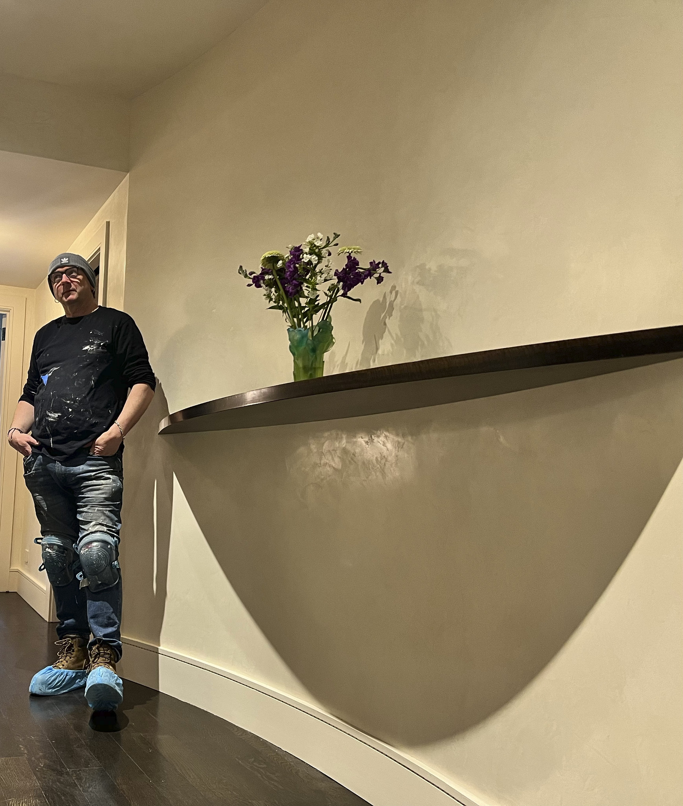

Conor Foy took an MFA at Columbia University, graduating in 1998, and has been finishing walls in New York since 2002 — first as a hand on other people's crews, then with his own. The work has always been the same work: material mixed to the room, applied on site, by people who have done it enough times to know when a coat is right.
What is unusual is not the craft. Plenty of good plasterers work in this city. What is unusual is that the shop behind the craft got rebuilt with the same care — estimating that is consistent whoever writes it, schedules that hold, invoices that arrive when they should, and a record of every color mixed so a repair years later still matches.
That rebuild produced software, and the software became a second business. But the reason it exists is the first one: we wanted the finish and the paperwork to be equally good.

Small and long-serving. The people who show up to your site are the people who did the sample, and most of them have been here more than a decade. We do not scale by hiring strangers for a season.
Lime, clay, pigment, leaf. Mixed for the job rather than bought pre-tinted, which is why a color can be matched again in five years and why the surface has depth a can of paint cannot reach.
Estimates that hold, invoices on time, and a client who can see where the job stands without calling to ask. Unglamorous, and the main reason contractors call us back.
Or we will bring one to your site.